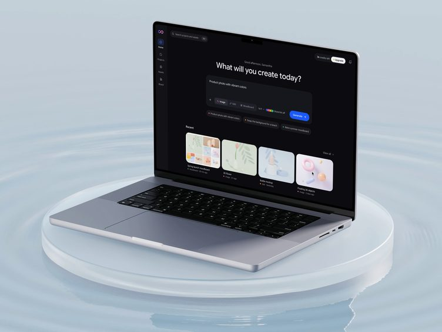

Loopie – AI Creative Platform | Dark Mode & Motion Design
by Bato UI/UX
AI · SaaSAI · SaaS
深色 AI 创作平台 Loopie：一句“What will you create today?”配提示词输入框，下方最近作品网格一字排开，笔记本浮在水面圆台上，动效感扑面而来；AI 创作工具用“一个问题 + 一排作品”把“开口就能做图”讲得轻松直接。Loopie, a dark AI creative platform: one “What will you create today?” prompt box above a row of recent creations, the laptop floating on a watery podium; one question and one row of work make “just ask and it creates” feel effortless.